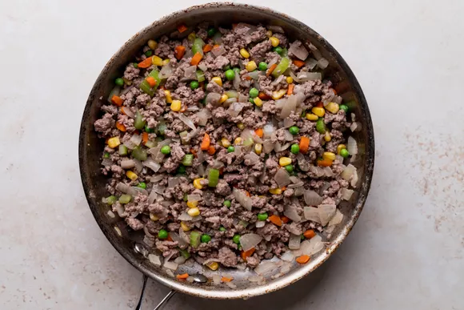

Shepherd's pie is a favorite of mine. It's easy to make and it's easy to store for later. This is a great dish for weekly meal preps. It's great for taking to work.
Place the peeled and quartered potatoes in medium sized pot. Cover with at least an inch of cold water. Add a teaspoon of salt. Bring to a boil, reduce to a simmer, and cook until tender (about 20 minutes).
Preheat the oven to 400 degrees fahrenheit.
While potatoes are cooking, melt 4 tablespoons of butter in large saute pan on medium heat. Add the chopped onions and cook until tender, about 6 to 10 minutes.
If you are including vegetables, add them according to their cooking time. Carrots should be cooked with the onions, because they take as long to cook as the onions do.
If you are including peas or corn, add them toward the end of the cooking of the onions, or after the meat starts to cook, as they take very little cooking time.
Add ground beef to the pan with the onion and vegetables. Cook until no longer pink. Drain the pan of excess fat, if necessary (anything more than 1 tablespoon). Season with salt and pepper.
Add the Worcerstershire sauce and beef broth. Bring the broth to a simmer and reduce heat to low. Cook uncovered for 10 minutes, adding more beef broth if necessary to keep the meat from drying out.
Taste the cooked filling and, if needed, add more salt, peppers, Worcestershire, or other seasonings of your choice.
When the potatoes are done cooking (a fork can easily pierce), remove them from the pot and place them in a bowl with the remaining 4 tablespoons of butter. Mash with fork or potato masher, taste, and adjust seasonings with salt and pepper.
Spread the cookid filling in an even layer in a large baking dish (such as a 9 x 13-inch casserole).
Spread the mashed potatoes over the top of the ground beef. Rough up the surface of the mashed potatoes with a fork so there are peaks that will get browned. You can even use a fork to make creative designs in the mashed potatoes.
Place in a 400 degree fahrenheit oven and cook until browned and bubbling, about 30 minutes. If necessary, broil for the last few minutes to help the surface of the mashed potatoes brown.
(Be careful when broiling using Pyrex or glass dishes, they have been known to shatter under the high heat of the broiler. It's not a worry if you are using a ceramic or metal casserole dish.)
Suggested variations:
Put a layer of creamed corn between the ground beef and the mashed potatoes.
Sprinkle grated cheddar cheese over the top of the mashed potatoes before baking.